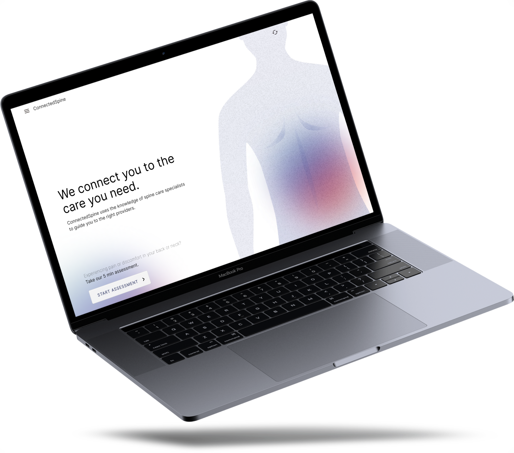

About ConnectedSpine

Course: Agile Software Development - Northwestern University, Spring 2023
Client: Dr. Kartik Kesavabhotla
Overview: ConnectedSpine is a web application that serves as a remote and immediate back pain advisor. For this product, I worked with a team of 5 others to break down the client’s problem, brainstorm features, prioritize story points to develop a MVP, and lead the team to present a refined deliverable.
My Role: Everything in the product management lifecycle including idea generation and management, research and analytics, planning, prototyping, validation, and delivery was done as a team.
App Dev
Visual Studio Code
JavaScript
HTML/CSS
React
Firebase
UI/UX Design
Figma
Bootstrap
Skills
Agile methodology
Product management
Project management
Communication
User Stories
User Testing
HOW IT WORKS
TAKE THE QUESTIONAIRE
Complete the user-friendly questionnaire within the mobile web app by inputting age, symptoms, and medical history.
GET RESULTS
The algorithm, which has been synthesized with complex research data, will output a tailored back pain treatment recommendations and possible diagnosis based on the user's answers.
FOLLOW UP
Users can sign in to save their results. If the results are saved, an automatic push notification will be sent out two weeks after prompting users to document their pain relief.